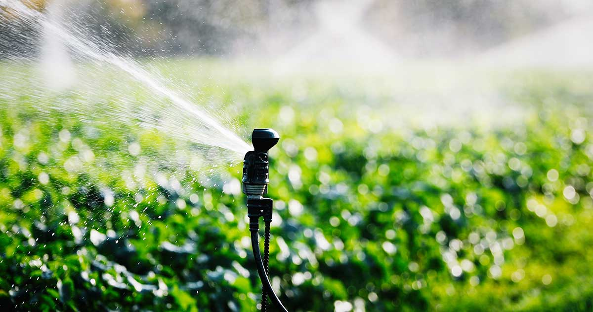

Optimización del Sistema de Riego para la Ganadería
Publicado el 25 de Septiembre de 2023
El riego eficiente es esencial para mantener pastos verdes y saludables para su ganado. En esta entrada del blog, exploraremos cómo optimizar su sistema de riego para obtener los mejores resultados. Desde la elección de la fuente de agua hasta la distribución adecuada, descubra consejos prácticos para mejorar la gestión del agua en su finca.
Leer más